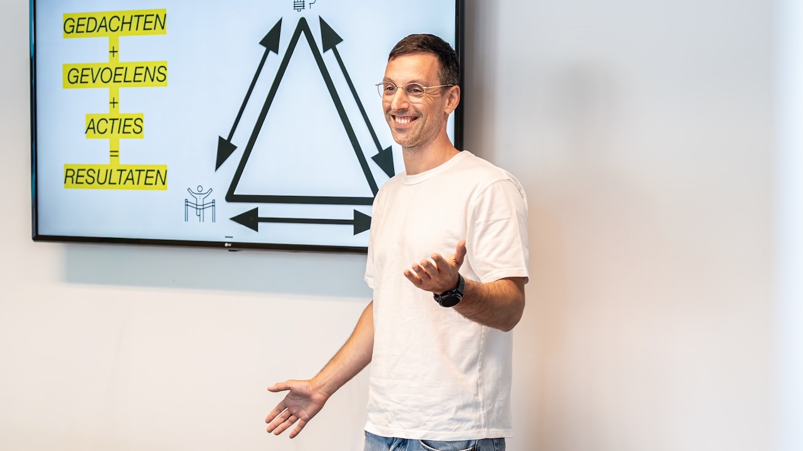

Eén dagdeel. Eén thema. Morgen toepasbaar.
Compacte, interactieve workshops voor teams die snel een stap willen zetten. Weinig slides, veel doen. Iedereen gaat naar huis met iets wat werkt.

Kies een workshop, of combineer er twee
Elke workshop duurt drie tot vier uur en is geschikt voor groepen van 6 tot 20 personen. Inhoud stem ik af op jullie sector en tools.
Beter prompten
Van vage vragen naar bruikbare output. Context, rollen, voorbeelden en itereren. We oefenen op echte taken uit jullie werk, zodat het direct rendeert.
Privacy en datahygiëne
Wat mag er in een AI-tool en wat nooit? Hoe herken je persoonsgegevens, hoe anonimiseer je, en wat zeggen de voorwaarden van ChatGPT, Gemini, Claude en Copilot echt?
Use-cases vinden
Waar zit in jullie werk de meeste winst? In een gestructureerde sessie brengen we taken in kaart, beoordelen we ze op kans en risico, en kiezen we de drie beste om mee te starten.
Werkafspraken maken
Samen met het team afspraken formuleren over tools, gebruik en grenzen. Het resultaat is een concept dat de organisatie kan vastleggen als beleid.
AI kritisch bekijken
Voor teams die willen begrijpen waar AI de fout in gaat: hallucinaties, bias, afhankelijkheid van grote leveranciers. Zodat je met verstand kiest, niet uit angst of hype.
AI voor management
Voor leidinggevenden en bestuur: wat betekent AI voor je organisatie, welke keuzes moet je maken over tools en beleid, en hoe meet je of het iets oplevert?
Kort verhaal, lang doen
- Vooraf: een kort gesprek over de groep, jullie tools en wat je wilt bereiken.
- Eerste half uur: de kern van het thema, met voorbeelden uit jullie sector.
- Daarna: aan de slag in kleine groepen, met eigen taken en begeleiding.
- Afsluiting: iedereen deelt wat werkte, en we leggen afspraken en vervolgstappen vast.
- Achteraf: deelnemers ontvangen een samenvatting en de gebruikte voorbeelden.

Goed om te weten
- Duur3 tot 4 uur per workshop. Twee workshops op één dag is goed te doen.
- Groepsgrootte6 tot 20 deelnemers.
- LocatieOp jullie locatie, in heel Nederland. Online in overleg.
- InvesteringOp aanvraag. Je ontvangt een helder voorstel na de kennismaking.
Welke workshop past bij jullie team?
Vertel me kort wat er speelt, dan adviseer ik welk thema het meeste oplevert. Vrijblijvend.
Liever direct contact?
Bellen of mailen mag altijd. Ik reageer binnen één werkdag.
- E-mailinfo@matthijsvanmeurs.nl
- Telefoon+31 6 41 01 10 64
- LinkedInVolg of stuur een bericht